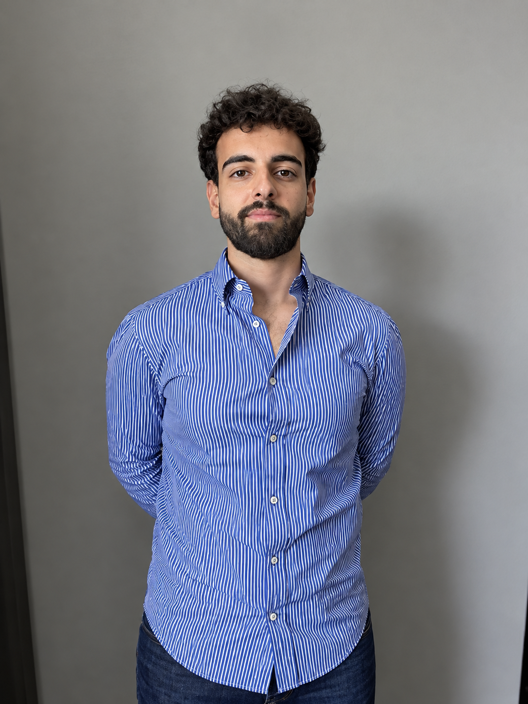
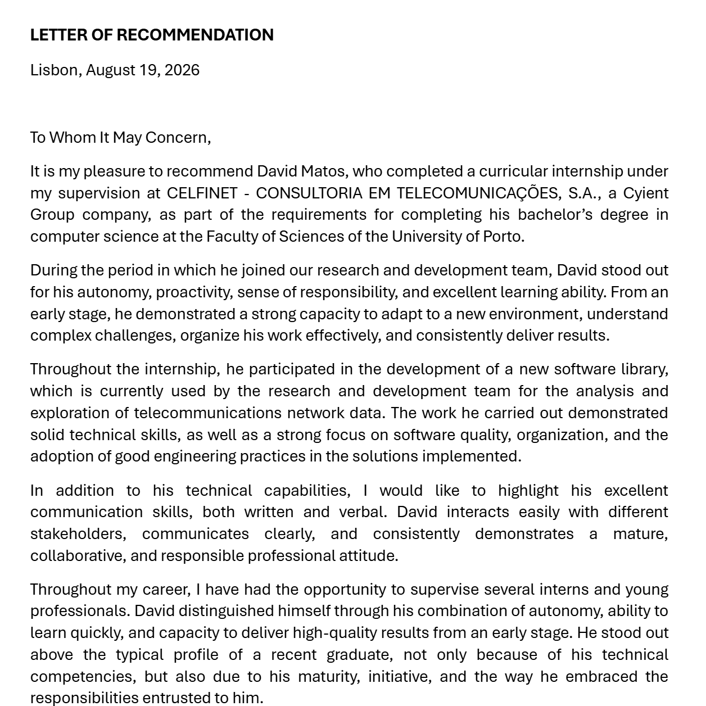
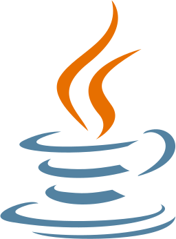
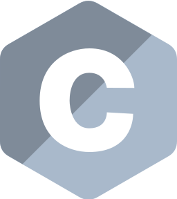
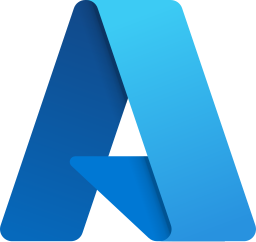

David Matos, backend and data engineer
I build Python libraries, FastAPI backends and the CI/CD pipelines that ship them. BSc in Computer Science, University of Porto, 2022 to 2026.

Celfinet, Lisbon2025 to 2026
Python library still used by two internal teams
Before Computer Science
For 10 years I played handball professionally. Training and competing with a team every week is where my discipline, my teamwork and my time management under pressure come from.
Two internships at Celfinet. Software engineering in Lisbon.
- Curricular internOct 2025 to Jan 2026
A Python library of hundreds of functions over the company's databases, on SQLAlchemy, shipped through Azure DevOps.
- Summer internSummer 2025
Restructured a FastAPI backend for base-station energy studies and wrote a CSV checker for bad data.
- Vice President, NUCC2023 to 2024
Ran technical and career events for the Computer Science students' association at the University of Porto.
Recommendation from Celfinet
David distinguished himself through his combination of autonomy, ability to learn quickly, and capacity to deliver high-quality results from an early stage.

Two projects from 2026
A cloud platform and a machine learning study, both written in Python.
Runs data science jobs on Kubernetes
A personal cloud platform of containerised services, packaged with Docker and orchestrated by Kubernetes on Linux.
Tunes k-nearest neighbours in Python
K-fold cross-validation across datasets, testing normalisation, PCA and Manhattan distance for accuracy and run time.
20 languages and tools
From the backend code to the cluster it runs on.
 Python
Python
Java
C C++
C++ JavaScript
JavaScript SQL
SQL FastAPI
FastAPI Flask
Flask Django
Django- SQLAlchemy
 Postman
Postman Docker
Docker Kubernetes
Kubernetes
Azure- Google Cloud
 Git
Git Linux
Linux Bash
Bash scikit-learn
scikit-learn- REST APIs